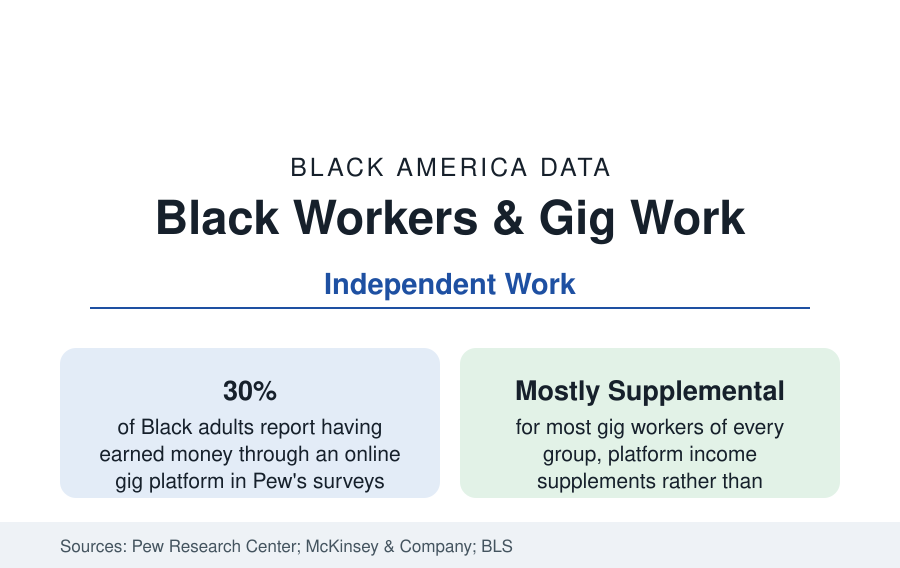

Black Employment
Black Workers in the Gig Economy: Platform Work in the Data
Black workers participate in platform and gig work at rates above the national average — in an arrangement whose flexibility and insecurity the surveys measure together.

Black workers participate in gig and platform work at rates above the national average in every major survey that measures it. Pew Research Center's studies find roughly three in ten Black adults report having earned money through an online gig platform — driving, delivery, tasks, selling — against about a quarter of adults overall, and the independent-work surveys (McKinsey's American Opportunity Survey counts some 36 percent of the workforce doing some independent work) find Black workers at or above the average share. This article reports what the data say about the arrangement's economics for the population that uses it most.
The Participation Pattern
The surveys stratify gig participation into a clear two-tier picture. The larger tier is supplemental: most platform workers of every group hold a primary job or income source and use gig work for margin income — a pattern especially pronounced among Black participants in the Federal Reserve's household survey data, where gig income is disproportionately reported as covering specific expenses and shortfalls. The smaller tier is dependent: roughly three in ten gig workers in the McKinsey data rely on independent work as their primary income, and it is in this tier that the demographic disparities concentrate — dependent gig workers are disproportionately Black and Latino, younger, and lower-income in the survey cross-tabs. Ride-hail and delivery driving, warehouse-adjacent contract work, and care and domestic platforms (where Black women form a large share of the workforce) are the dependent tier's main occupations.
Earnings and the Net-Wage Question
Gross platform earnings are the data's most contested figure. The platforms' own disclosures and the academic studies using driver data place gross hourly earnings for ride-hail and delivery broadly in the teens to twenties of dollars before expenses; the net figure — after fuel, vehicle depreciation, maintenance, and the self-employment tax share — is where the literature's estimates diverge, from near minimum wage in the critical studies to the mid-teens in the industry-funded ones. What the surveys agree on is the variance and the floor's absence: no minimum applies to engaged time in most arrangements, unpaid waiting and travel time is substantial, and earnings volatility week to week is the dependent tier's defining financial fact. The benefits ledger is unambiguous in the data: gig-primary workers lack employer health coverage, retirement plans, paid leave, and unemployment insurance in their gig capacity at rates far above the employed population, arriving in the insurance profile's uninsured data disproportionately.
Why the Participation Runs High
The literature offers the demand-side and the exclusion-side explanations, and the survey evidence supports both. On the demand side, gig work's genuine attributes — schedule control, immediate pay, no hiring gate — are worth the most to workers managing care responsibilities, variable primary schedules, and income volatility, all of which the household data show concentrated in Black workers' lives. On the exclusion side, the traditional labor market's documented frictions — the callback and screening disparities of the audit literature, record-based exclusions (a large share of platforms run lighter screening than the employers of the occupation data), and the geographic mismatch of the Black unemployment profile — push toward the arrangement with no interview. The racial composition of the dependent tier is, in the standard reading, the traditional market's failure data expressed in platform form.
Policy and Classification: The Moving Frame
The arrangement's legal frame is unsettled in the data's own terms: the classification question (employee versus independent contractor) has produced state ballot measures, agency rules that have reversed across administrations, and a patchwork whose current state varies by state and platform — a moving target this reference reports as contested rather than resolved. What the data track through the legal noise is the arrangement's scale: platform work is a permanent, material share of the labor arrangements of the Black workforce — too large to be a footnote in the employment data, too supplemental for most of its participants to be its main story.
Reading the Gig Data
The gig economy in Black America's data is best read as a pressure gauge: participation runs highest exactly where the primary labor market serves workers worst, and its users' own survey verdicts — valuing the flexibility, reporting the insecurity — hold both facts at once. The gauge reads the economy around it as faithfully as it describes the platforms themselves.
More in Black Employment
The Black Unemployment Rate: The Two-to-One Pattern
Black unemployment runs at roughly twice the White rate — 5.5 percent against 3.3 percent in annual averages — a ratio stable across five decades of federal data. How it is measured and why it persists.
Black Median Weekly Earnings: The 80-Cent Ratio
Black full-time workers earn a median of about $900 a week — roughly 80 cents for every dollar White workers earn. The BLS earnings data by group, gender, and occupation.
Black Labor Force Participation: Working at National Rates
Black labor force participation runs at roughly the national rate — and Black women participate at higher rates than White women. The BLS participation data.
Source: Pew Research Center gig platform studies; McKinsey American Opportunity Survey; U.S. Bureau of Labor Statistics Contingent Worker Supplement; Federal Reserve household surveys.